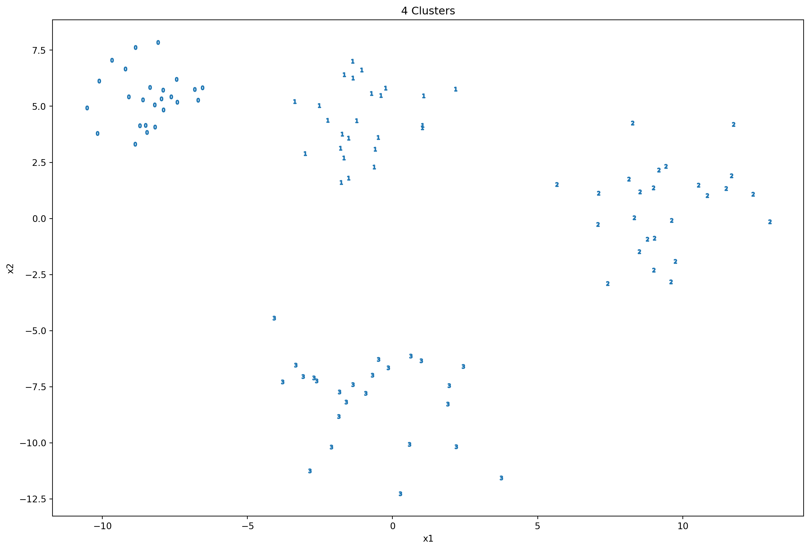
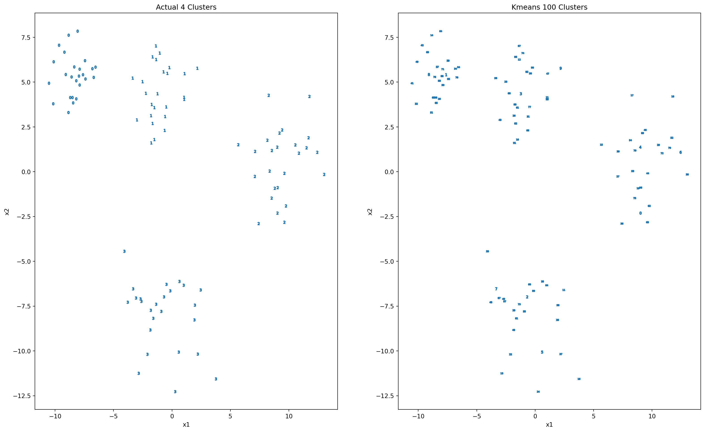
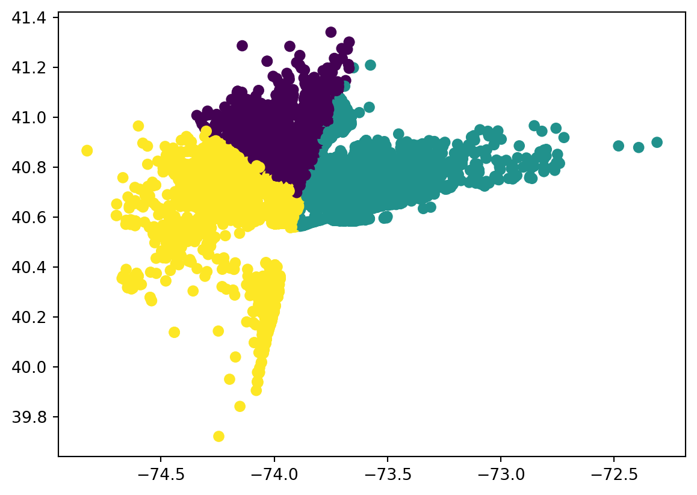
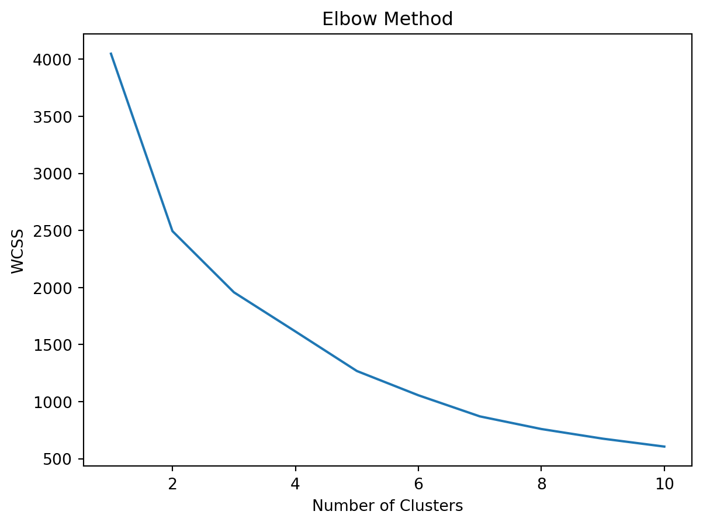

Code
wcss = [] # within-cluster sum of squares
for i in range(1, 11):
model = KMeans(n_clusters = i)
y_kmeans = model.fit_predict(x)
wcss.append(model.intertia_) # adding accuracy to our modelwcss = [] # within-cluster sum of squares
for i in range(1, 11):
model = KMeans(n_clusters = i)
y_kmeans = model.fit_predict(x)
wcss.append(model.intertia_) # adding accuracy to our model
Single Link (nearest neighbor)

Complete Link (diameter)


# libraries
from sklearn.datasets import make_blobs
from sklearn.cluster import KMeans
import pandas as pd
import matplotlib.pyplot as plt
import seaborn as sns
# data
x, y = make_blobs(n_samples=100,
centers=4, n_features=2,
cluster_std=[1,1.5,2, 2],
random_state=7)
# make blobs
df_blobs = pd.DataFrame({
'x1': x[:,0],
'x2':x[:,1],
'y':y
})
df_blobs.head()| x1 | x2 | y | |
|---|---|---|---|
| 0 | -3.384261 | 5.221740 | 1 |
| 1 | -1.836238 | -7.735384 | 3 |
| 2 | -7.456176 | 6.198874 | 0 |
| 3 | -1.785043 | 1.609749 | 1 |
| 4 | -10.124910 | 6.133805 | 0 |
def plot_2d_clusters(x, y, ax):
y_uniques = pd.Series(y).unique()
for cl in y_uniques:
x[y==cl].plot(
title=f'{len(y_uniques)} Clusters',
kind='scatter',
x='x1',
y='x2',
marker = f'${cl}$',
ax = ax
)fig, ax = plt.subplots(1,1, figsize=(15,10))
x, y = df_blobs[['x1','x2']], df_blobs['y']
plot_2d_clusters(x,y,ax)
kmeans = KMeans(n_clusters=100, random_state=7)
y_pred = kmeans.fit_predict(x)C:\Users\carlj\anaconda3\lib\site-packages\sklearn\cluster\_kmeans.py:1412: FutureWarning:
The default value of `n_init` will change from 10 to 'auto' in 1.4. Set the value of `n_init` explicitly to suppress the warning
C:\Users\carlj\anaconda3\lib\site-packages\sklearn\cluster\_kmeans.py:1436: UserWarning:
KMeans is known to have a memory leak on Windows with MKL, when there are less chunks than available threads. You can avoid it by setting the environment variable OMP_NUM_THREADS=1.
fig, axs = plt.subplots(1, 2, figsize=(20,12))
plot_2d_clusters(x,y,axs[0])
plot_2d_clusters(x,y_pred,axs[1])
axs[0].set_title(f'Actual {axs[0].get_title()}')
axs[1].set_title(f'Kmeans {axs[1].get_title()}')Text(0.5, 1.0, 'Kmeans 100 Clusters')
df = pd.read_csv('data/uber_clean.csv')
df.head()| Date/Time | Lat | Lon | Base | Date | |
|---|---|---|---|---|---|
| 0 | 2014-07-01 0:03 | 40.7586 | -73.9706 | B02512 | Tuesday |
| 1 | 2014-07-01 0:05 | 40.7605 | -73.9994 | B02512 | Tuesday |
| 2 | 2014-07-01 0:06 | 40.7320 | -73.9999 | B02512 | Tuesday |
| 3 | 2014-07-01 0:09 | 40.7635 | -73.9793 | B02512 | Tuesday |
| 4 | 2014-07-01 0:20 | 40.7204 | -74.0047 | B02512 | Tuesday |
x = df[["Lat", "Lon"]] # features
x.head()| Lat | Lon | |
|---|---|---|
| 0 | 40.7586 | -73.9706 |
| 1 | 40.7605 | -73.9994 |
| 2 | 40.7320 | -73.9999 |
| 3 | 40.7635 | -73.9793 |
| 4 | 40.7204 | -74.0047 |
model = KMeans(n_clusters = 3)
y_kmeans = model.fit_predict(x)
df['y'] = y_kmeans # store it in an actual frame
df.head()
plt.scatter(df['Lon'], df['Lat'], c=df['y']) # colorized based on y-values (clusters based on lat long k-means)C:\Users\carlj\anaconda3\lib\site-packages\sklearn\cluster\_kmeans.py:1412: FutureWarning:
The default value of `n_init` will change from 10 to 'auto' in 1.4. Set the value of `n_init` explicitly to suppress the warning

# model inertia: measures how well a data set was clustered by k-means
# meaure the distance between each data point and its centroid, square this distance, and sume up
# these squares across one cluster
# a good model is one with a low inertia value and low number of cluster (K)
model.inertia_1957.7363841201532wcss = [] # within-cluster sum of squares
for i in range(1,11):
model = KMeans(n_clusters = i)
y_kmeans = model.fit_predict(x)
wcss.append(model.inertia_) # adding accuracy to our model
plt.plot(range(1,11), wcss)
plt.xlabel('Number of Clusters')
plt.ylabel('WCSS')
plt.title('Elbow Method')
plt.show()C:\Users\carlj\anaconda3\lib\site-packages\sklearn\cluster\_kmeans.py:1412: FutureWarning:
The default value of `n_init` will change from 10 to 'auto' in 1.4. Set the value of `n_init` explicitly to suppress the warning
C:\Users\carlj\anaconda3\lib\site-packages\sklearn\cluster\_kmeans.py:1412: FutureWarning:
The default value of `n_init` will change from 10 to 'auto' in 1.4. Set the value of `n_init` explicitly to suppress the warning
C:\Users\carlj\anaconda3\lib\site-packages\sklearn\cluster\_kmeans.py:1412: FutureWarning:
The default value of `n_init` will change from 10 to 'auto' in 1.4. Set the value of `n_init` explicitly to suppress the warning
C:\Users\carlj\anaconda3\lib\site-packages\sklearn\cluster\_kmeans.py:1412: FutureWarning:
The default value of `n_init` will change from 10 to 'auto' in 1.4. Set the value of `n_init` explicitly to suppress the warning
C:\Users\carlj\anaconda3\lib\site-packages\sklearn\cluster\_kmeans.py:1412: FutureWarning:
The default value of `n_init` will change from 10 to 'auto' in 1.4. Set the value of `n_init` explicitly to suppress the warning
C:\Users\carlj\anaconda3\lib\site-packages\sklearn\cluster\_kmeans.py:1412: FutureWarning:
The default value of `n_init` will change from 10 to 'auto' in 1.4. Set the value of `n_init` explicitly to suppress the warning
C:\Users\carlj\anaconda3\lib\site-packages\sklearn\cluster\_kmeans.py:1412: FutureWarning:
The default value of `n_init` will change from 10 to 'auto' in 1.4. Set the value of `n_init` explicitly to suppress the warning
C:\Users\carlj\anaconda3\lib\site-packages\sklearn\cluster\_kmeans.py:1412: FutureWarning:
The default value of `n_init` will change from 10 to 'auto' in 1.4. Set the value of `n_init` explicitly to suppress the warning
C:\Users\carlj\anaconda3\lib\site-packages\sklearn\cluster\_kmeans.py:1412: FutureWarning:
The default value of `n_init` will change from 10 to 'auto' in 1.4. Set the value of `n_init` explicitly to suppress the warning
C:\Users\carlj\anaconda3\lib\site-packages\sklearn\cluster\_kmeans.py:1412: FutureWarning:
The default value of `n_init` will change from 10 to 'auto' in 1.4. Set the value of `n_init` explicitly to suppress the warning

# import folium
import folium# visaulize data in actual map
df = df[:2000] # instead of 40,000
clusters1 = df[['Lat', "Lon"]][df['y'] == 0].values.tolist()
clusters2 = df[['Lat', "Lon"]][df['y'] == 1].values.tolist()
clusters3 = df[['Lat', "Lon"]][df['y'] == 2].values.tolist()
# map
city_map = folium.Map(location= [40.7128, -74.0060], zoom_start = 10, titles = "openstreetmap")
for i in clusters1:
folium.CircleMarker(i, radius =2, color = 'blue', fill_color = 'lightblue').add_to(city_map)
for i in clusters2:
folium.CircleMarker(i, radius =2, color = 'red', fill_color = 'lightred').add_to(city_map)
for i in clusters3:
folium.CircleMarker(i, radius =2, color = 'green', fill_color = 'lightgreen').add_to(city_map)
city_map